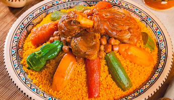
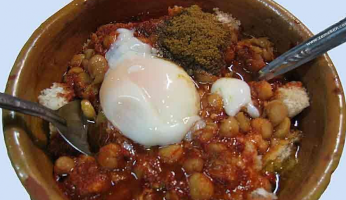
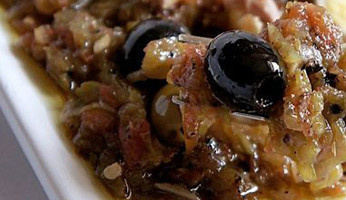
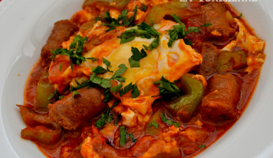

La cuisine tunisienne est pleine de saveurs. Cette richesse s'explique par les nombreux héritages qu'a reçu la Tunisie, des cultures berbères à andalouse, aux populations arabes en passant par les Italiens, les juifs ou encore les turcs.
Voici 4 plats typiques pour connaître un peu mieux la cuisine tunisienne traditionnelle.
|  |  |
|---|---|
| Couscous | Lablabi |
|  |  |
| La salade méchouia | La chakchouka |